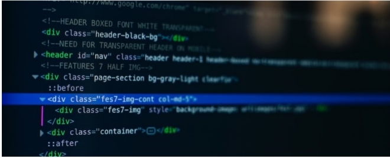

The Basic Language Of The Web: HTML

Posted by Laura Joneson Monday, June 21st
2027.

HTML dtands for
Hyper
Text
Markup
Language.
it's a markuplanguage that web
developers use to structure and
describe the content of a web page (not
a programming language).
HTML consists of elements that describe different types of content:
paragraphs,
links, heading, images, video, etc. Web browsers understand HTML and
render HTML code as websites.
In HTML, each element is made up of 3 parts:
- The opening tag
- The closing tag
- The actual element
You can learn more at MDN Web Docs
There are countless reasons for learning the fundamental language of the
web. Here
Hopefully you learned something new here. See you next time!
RELATED POSTS

How to learn
Web
Development
by ojie kelvin
The Unknown
Power of Css
By jim goyt
Why
Javascript
By malicsa